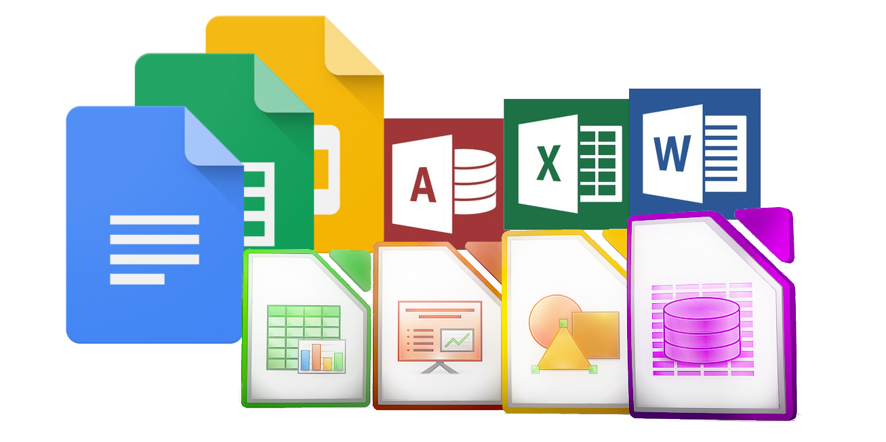

Algunas suites ofimáticas:
- Microsoft Office
- LibreOffice
- AppleWorks
- Asana
- Apache OpenOffice
- WPS Office
Es el conjunto de herramientas, técnicas y aplicaciones que facilitan, optimizan y mejoran las tareas relativas a la oficina. Se trata de un acrónimo compuesto por ‘ofi’ (oficina) – ‘mática’ que nos permite crear textos, hoja de cálculo, creación de presentaciones, bases de datos, edición de fórmulas, diagramas de flujo y dibujo.(informática).
Algunas suites ofimáticas:
El mas popular, si duda, es Microsoft Office, pero este es un software comercial privativo, es bastante caro y solo esta disponible para windows y macOS. Asi que, aquí te dejo una guia de instalacion para algunos paquetes ofimaticos gratuitos tanto para windows como para Linux:
Ahora bien, quizas estemos intezados en unas ciertas prestaciones que nos podría aportar un paquete ofimatico o las caracteristicas tecnicas de alguno de estos como el diseño o la portabilidad de este.
| S.O Soportados | Compatibilidad de archivos | Portable | Open Source | Interfaz de usuario | Programas que dispone | Soporte extensivo de idiomas. | Versión | |
| Microsoft Office | Windows, macOS, | Formatos Open XML y extensiones de nombres de archivo como .docx, .xlsx y .pptx. y derivados, según el programa empleado | No | No | Panel de acciones, controles en documentos, menús contextuales, Interfaz de usuario de Cinta personalizada, paneles de tareas personalizados | Outlook, OneDrive, Word, Excel, PowerPoint, OneNote, SharePoint, Teams, y Yammer | Posee una gran cantidad de idiomas aunque no todas las aplicaciones de office están disponibles en el mismo idioma | Pago |
| LibreOffice | Windows, macOS, Linux | OpenDocument, exportación a PDF y Flash, abrir y guardar archivos en muchos formatos comunes incluyendo Microsoft Office, HTML, XML, WordPerfect, y Lotus 1-2-3 | Si | Si | Altamente personalizable, se pueden personalizar los menús, las barras de herramientas y las teclas de acceso rápido, se pueden agregar menús y barras de herramientas y asignar macros a eventos | Writer, Calc, Impress, Draw, Base, Math | Disponible en más de 40 idiomas, diccionarios ortográficos, de división de palabras y de sinónimos en más de 70 idiomas y dialectos también posee soporte tanto para diseño de texto complejo, como para idiomas con escritura de derecha a izquierda. | Gratuito | WPS Office | macOS, Windows, Android, iOS, Linux | Es compantible con Microsoft Office, Google Docs, Adobe PDF | No | No | Destaca la interfaz de usuario Ribbon, de un estilo similar al marcado por Microsoft Office 2007 | Document, Presentation, Spreadsheet, PDF y Cloud. | Posee 8 idiomas para Windows y Mac y 46 idiomas para android y iOS | Gratuito y version de pago |